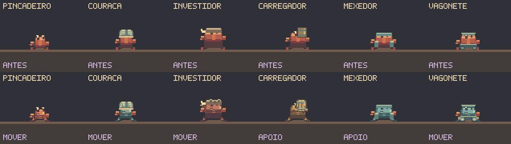
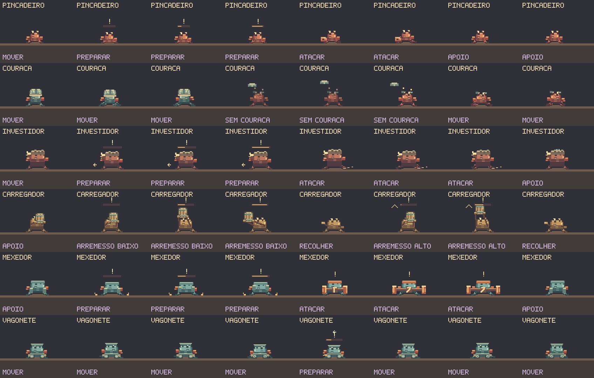
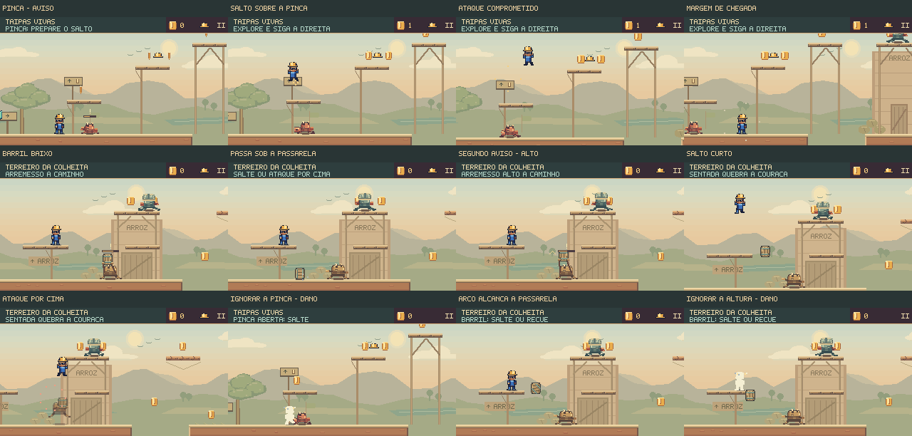

Ler o ataque.
Escolher a resposta.
Revisão das seis famílias e das 44 posições de inimigos nas fases de Guaíra. Pinças, couraças, arremessos e rodas ganham sinais próprios, animações articuladas e diferenças reais no combate.
O arremesso muda a segurança da passarela
O primeiro barril passa por baixo. O segundo sobe até a passarela: o carregador ergue a carga e anuncia a nova altura. Um salto curto evita esse arco e conserva o inimigo no campo de visão; depois, é possível atacá-lo por cima.
Corrigido um perigo invisível. O desenho dos trechos ampliados omitia os barris, embora eles causassem dano. Agora o projétil aparece nas seis fases, inclusive ao voltar para os trechos iniciais.
Um objeto contínuo. O barril nas mãos e o barril lançado usam a mesma arte de madeira e aros. Mãos, soltura, rotação e poeira de aterrissagem acompanham a simulação.
Trecho de 7,6 s iniciado pelo carregamento normal de um checkpoint de teste. Entrada de teclado, sem edição de posição, vida ou relógio de ataque. Exportação a 30 fps; simulação a 60 Hz; sem áudio.
A pinça exige uma decisão na aproximação
O pinçadeiro interrompe a patrulha, prepara a garra e avança pouco antes de descansar. O golpe alcança além do corpo. Saltar ou recuar responde ao aviso; a direção fica comprometida. Ele só inicia essa preparação contra uma aproximação no mesmo chão, preservando a leitura dos pousos entre plataformas.
Silhuetas, materiais e movimento próprios
Estudo de poses ampliado, com os relógios reais dos inimigos sobre um piso de teste. A couraça é removida para inspecionar a reação; esta composição não representa uma partida.

| Inimigo | Mudança | Resposta do jogador |
|---|---|---|
| Pinçadeiro · 15 | Preparação de 450 ms, avanço curto e pinça frontal. | Saltar, recuar ou usar a rota elevada. |
| Couraça · 17 | Placas quebradas visíveis; sem armadura, retoma a patrulha mais rápido. | Aproveitar o atordoamento ou usar a sentada. |
| Investidor · 1 | Arranque, velocidade central maior e frenagem. | Ler a direção e atacar na recuperação. |
| Carregador · 9 | Alterna arremesso baixo e alto, com preparação diferente. | Observar a altura antes de ocupar a passarela. |
| Mexedor · 1 | Pinças se estendem e recolhem; alcance acompanha o desenho. | Esperar o giro terminar e atacar por cima. |
| Vagonete · 1 | Aceleração, frenagem e rodas ligadas ao deslocamento. | Aproveitar a pausa nas pontas para atravessar. |

Ver os erros: ignorar a pinça e ficar parado no arremesso alto
A pinça causa dano além do corpo no passo 75 deste encontro.
O barril baixo passa sem atingir. Ao ignorar o próximo aviso, o Feka perde o capacete no passo 329.
Conferência no jogo

3.680 testes TypeScript aprovados, zero falhas e um caso opcional ignorado; mais três testes JavaScript aprovados. Os 35 casos novos cobrem as ações dos inimigos, as esquivas e a visibilidade dos projéteis. Validadores, verificação de tipos e build passaram. No navegador, foram conferidos oito encontros com teclado e toque simulado, quatro pausas e nove percursos da campanha normal com gamepad simulado, incluindo as oito cenas e os dois chefes.
Resultados da revisão · Encontros gravados · Inventário e estudo de poses · Navegador · Campanha completa
As entradas de toque e gamepad são simuladas em navegador de desktop. Os percursos ensaiados verificam respostas possíveis; a descoberta e a dificuldade para jogadores novos ainda precisam de avaliação em primeiras partidas.